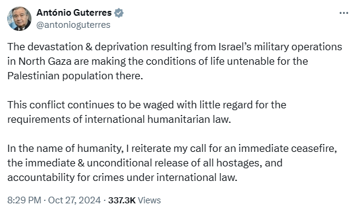

JERUSALEM: Israel bombarded Hezbollah and Hamas targets in Lebanon and Gaza on Sunday, with no respite in the conflict a day after its strikes on Iran raised fears of a broader war. The strikes killed 45 Palestinians across the Gaza Strip, most of them in the north of the enclave, Palestinian officials said, as efforts to secure a ceasefire resumed in Qatar. The Israeli military claimed it had killed 70 Hezbollah fighters and struck 120 targets in Lebanon and carried out “precision strikes” on weapons factories and storage facilities in the group’s southern Beirut stronghold over the past day. It said five Israeli soldiers were killed in Lebanon, bringing to 37 the death toll for soldiers fighting there since the start of ground offensive on Sept 30. Following Saturday’s Israeli air strikes, which killed four soldiers, Iran said it had a “duty” to respond, but its military said it was prioritising a ceasefire in Gaza and Lebanon. Prime Minister Benjamin Netanyahu also seemed to indicate Israel was done striking Iran, saying the attack on Saturday was “precise and powerful, achieving all of its objectives”. In Gaza, Israeli forces are again carrying out a ground and air campaign in the north that they say aims to prevent Hamas from regrouping. On Sunday, Iran’s supreme leader Ayatollah Ali Khamenei took to social media to say that the Israeli attack “should neither be exaggerated or minimised”. He said Iran should make Israel “understand the strength, will, and initiative of the Iranian nation and youth”. A handout picture provided by the office of Iran’s Supreme Leader Ayatollah Ali Khamenei on Oct 27, 2024, shows him addressing the crowd during a meeting in Tehran. — AFP Earlier, the armed forces general staff had said that while it was “reserving its legal and legitimate right to respond at the appropriate moment, Iran is prioritising the establishment of a lasting ceasefire in Gaza and Lebanon”. Jabalia in focus
Earlier, 20 people were killed following an air strike on houses in the Jabalia refugee camp, medics and the Palestinian official news agency WAFA said. An Israeli strike on a school sheltering displaced families in the Shati camp, killed nine people and wounded 20, they said. Footage showed people rushing to the bomb site and bodies scattered on the ground. Three journalists were among those killed at the school — Saed Radwan, head of digital media at Hamas Al-Aqsa television, Hanin Baroud, and Hamza Abu Selmeya, according to Hamas media. Truck rams into crowd A truck driver rammed his vehicle into a crowd waiting at a bus stop in central Israel, injuring 29 people, medics and police said. The truck ramming incident occurred in Ramat Hasharon and police said civilians at the site “shot the truck driver and neutralised him”. Hamas, in a statement, said the “heroic ramming attack” near the “Mossad headquarters… was in response to the crimes committed by the Zionist occupation” against Palestinians. Besides, a man who tried to stab Israeli soldiers was killed in the area of Hizma near Jerusalem. UN chief Antonio Guterres said he was “shocked by harrowing levels of death, injury and destruction” being carried out by Israel in Gaza. “The plight of Palestinian civilians trapped in north Gaza is unbearable,” Guterres’s spokesman Stephane Dujarric said. “Repeated efforts to deliver humanitarian supplies essential to survive — food, medicine and shelter — continue to be denied by the Israeli authorities, with few exceptions, putting countless lives in peril,” Dujarric said. In the name of humanity, the Secretary-General reiterated his calls for an immediate ceasefire, the immediate and unconditional release of all prisoners, and accountability for crimes under international law, he added. 